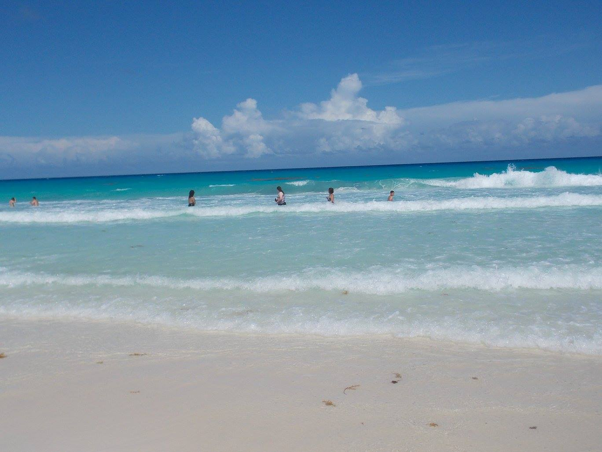
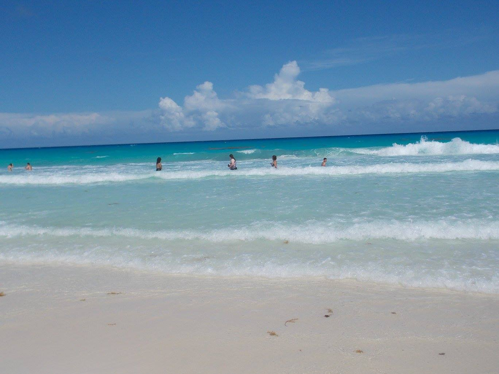
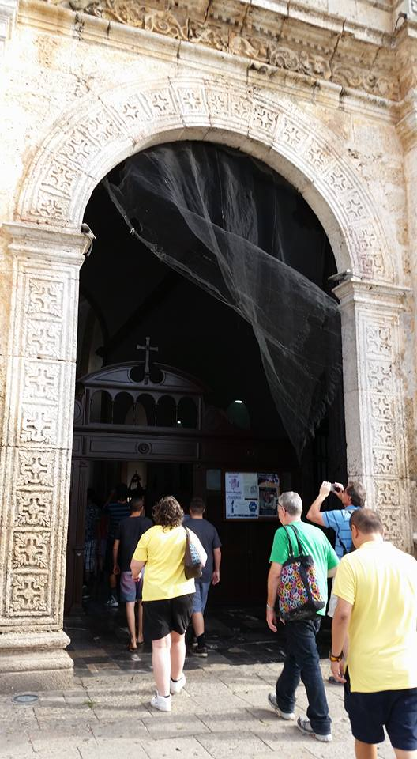
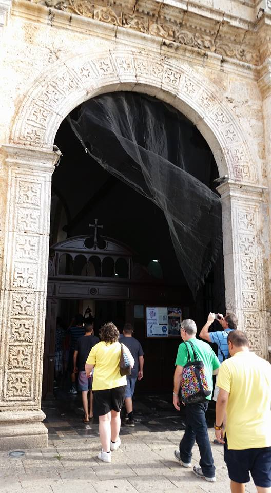

We stayed at the Real Gran Caribe. The resort was beautifual and the beach was every bit as beautiful as we dreamed.

 


While in Cancun I enjoyed took part in many different activities. I went swimming ine the ocean, Parasailing, and Snorkeling at Maroma beach.


 

My mom and I went on an excursion to see the Ancient Myan ruins of Chichen Itza. On the way we stopped at an undergorund Cenote to go swimming. The ruins were magnificent. Most notable was the pyramid El Castilo and the observatory El Caracole. Then we stopped at the village of Valladolid to visit a historic mission church.